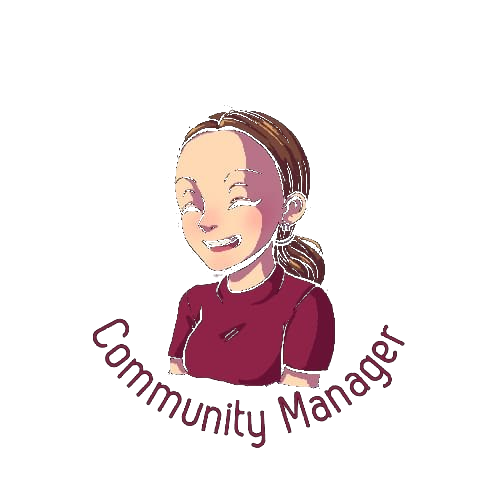

Community management
Gestion quotidienne de vos réseaux sociaux : publications, animation de votre communauté, réponses aux messages et commentaires, veille — pour une présence vivante et régulière.
Pour une communication brillante et humaine
Ancienne assistante sociale, aujourd'hui community manager : j'apporte à votre communauté en ligne la même écoute et la même sincérité que sur le terrain.
Prenons rendez-vous

Mon histoire
Je n'ai pas toujours parlé aux communautés depuis un écran. Pendant des années, j'ai accompagné au quotidien des personnes aux besoins très différents — mais avec un point commun : le besoin de communiquer, d'être entendues, de créer du lien. Ma reconversion, c'est exactement ça : j'ai gardé cette passerelle, et j'y ai ajouté les outils de la communication digitale.
Pendant plusieurs années, j'ai été assistante sociale. Mon métier : écouter, comprendre, accompagner chaque personne avec ce qu'elle est, à son rythme, sans jugement. Un engagement humain que je porte encore aujourd'hui, mais différemment.
En me reconvertissant vers le community management, je n'ai rien renié de tout ça — je l'ai transposé. Derrière chaque compte Instagram ou chaque page Facebook, il y a une équipe, une histoire, des personnes. Mon rôle, c'est de vous aider à vous faire entendre et à créer du lien avec vos communautés, avec la même sincérité et le même engagement que j'avais sur le terrain.
Aujourd'hui, j'accompagne des PME locales et d'autres freelances qui, comme moi, veulent une présence en ligne fidèle à ce qu'ils sont vraiment.
Un peu plus sur moi : en dehors du travail, je m'implique aussi pour la cause animale. Une autre façon de rester fidèle à ce qui me fait avancer — l'attention aux autres, humains ou pas.
Services
Plusieurs façons de travailler ensemble, adaptées à vos besoins et à votre budget. Tarifs uniquement sur devis, après un premier échange.
Gestion quotidienne de vos réseaux sociaux : publications, animation de votre communauté, réponses aux messages et commentaires, veille — pour une présence vivante et régulière.
Définition d'une ligne éditoriale claire, choix des bons réseaux pour votre activité, calendrier de publication et objectifs mesurables — pour donner du sens à votre présence en ligne.
Visuels, textes et formats courts pensés pour votre audience : du contenu qui vous ressemble et qui capte l'attention, sans perdre votre authenticité.
Un format plus léger, pensé pour les petits budgets : un rendez-vous en visio pour auditer votre présence actuelle et repartir avec des pistes concrètes à appliquer vous-même.
Portfolio
Un aperçu de mon accompagnement pour deux profils différents : une entrepreneuse indépendante et une PME locale. Deux contextes, deux stratégies adaptées — mais la même méthode : écouter d'abord, proposer ensuite.
Entrepreneuse indépendante
Avant notre collaboration, elle publiait de façon occasionnelle, sans ligne éditoriale ni régularité. On a construit ensemble une présence simple et sincère, à son image.
PME locale
Une page Facebook existait déjà mais était à l'abandon depuis plusieurs mois. L'objectif : la relancer sans bousculer les habitudes de l'équipe, et ouvrir Instagram pour toucher une clientèle plus jeune.
Pourquoi moi
Ce qui me guide n'a pas changé depuis mes années d'assistante sociale : l'écoute, l'engagement et l'envie sincère d'aider. Ce sont ces valeurs qui portent ma façon de faire de la communication.
Chaque client est différent : je m'adapte à vos besoins et je fais le lien entre votre réalité et celle des réseaux sociaux.
Une communication honnête, sans promesses irréalistes ni jargon inutile.
Je pioche dans les outils de mon ancien métier comme dans ceux du community management, et je me forme dès que je ne sais pas.
Un accompagnement de proximité pour les PME et freelances de votre région.
Contact
Un mot ou une question ? Écrivez-moi, je vous réponds rapidement.